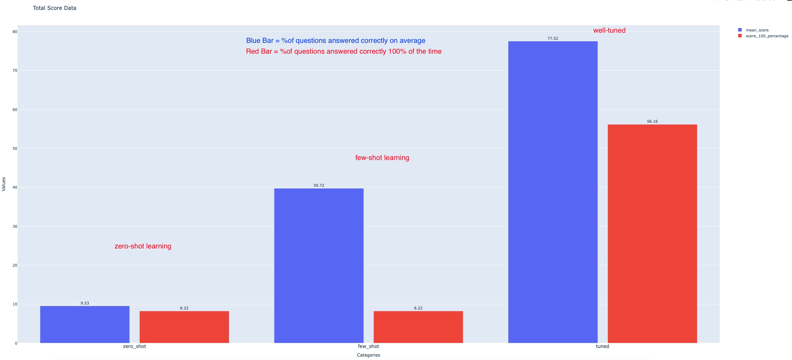
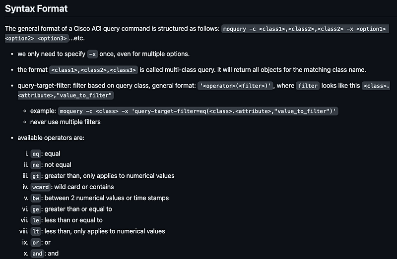
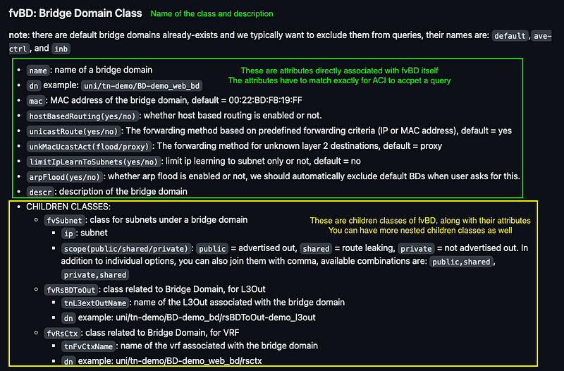
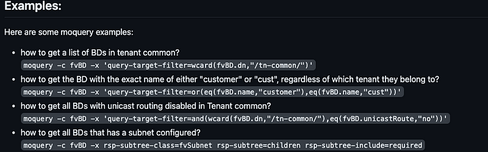
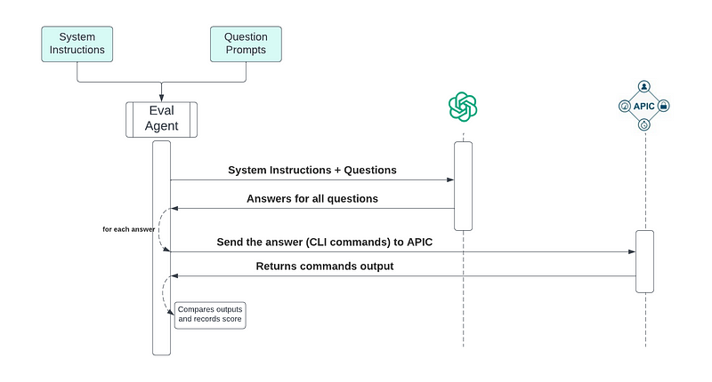
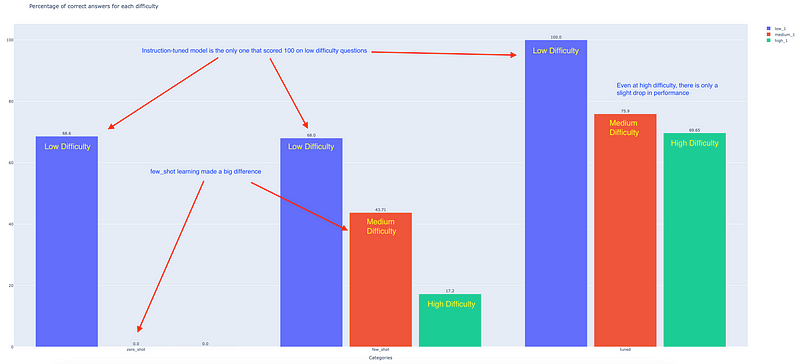
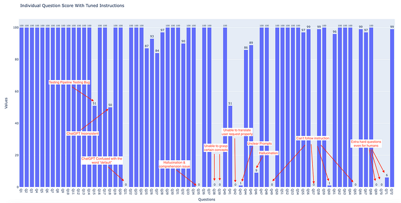
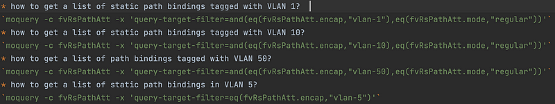
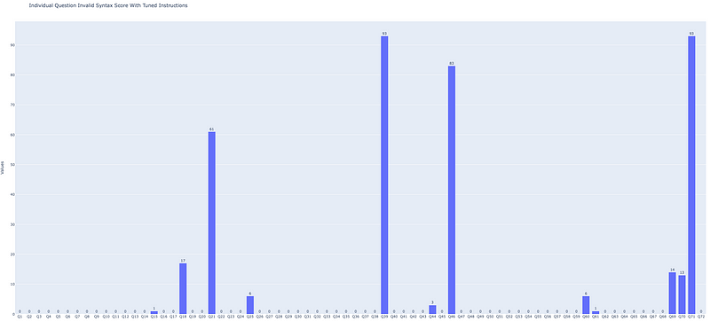
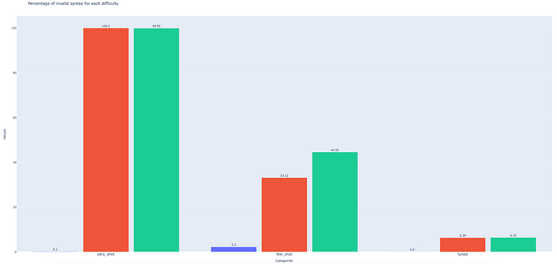

System Instructions are more potent than you might realize
I have seen many posts from Network Engineers and Architects dismissing LLM’s ability to perform domain-specific tasks. While it is true that a generic LLM software like ChatGPT does not possess the same level of domain knowledge, it has a high potential to outperform humans if given proper guidance and some teaching.
In this post, I will cut through the noise and examine how to “teach” chatGP to answer domain-specific questions like an expert.
Note that this article uses Cisco ACI as an example. The code used in this article can be found here — https://github.com/zhangineer/networking_llm_instruction
This article will guide you through the following key points:
-
ChatGPT’s ability to answer domain-specific questions skyrocketed when provided with quality data in small quantities.
-
Human expert knowledge in domain-specific areas is not just necessary but integral. This article will demonstrate its significance and how it can be leveraged to enhance LLM’s performance.
-
Making a helpful model requires something other than expert programming or AI/ML knowledge. The instruction-tuned approach demonstrates great potential in improving LLM’s ability to become an invaluable assistant in domain-specific technology.
Summary
Instruction-tuning greatly enhanced ChatGPT’s domain knowledge. On average, instruction-tuned ChatGPT scored 77.52%, which is 8x higher than zero-shot learning (9.53%) and ~2x higher than few-shot learning (39.72%).
TL;DR
As usual, here is a high-level summary for the busy folks:
-
This research experiment explored instruction-based tuning to enhance ChatGPT’s ability to answer domain-specific questions, specifically Cisco ACI query commands.
-
The goal was to test ChatGPT’s ability to provide accurate ACI CLI commands after being tuned with detailed instructions.
-
The Q&A tests contain 72 questions with three levels of difficulty. Q1–Q10 are low, Q11 — Q52 are medium, and Q53 — Q72 are high.
-
The instructions provided are similar to how we would teach a junior engineer.
-
Each test was run 100 times for all 72 questions.
-
If we only account for questions answered correctly 100% of the time, the instruction-tuned model scored 56.16%, which is ~7x higher than zero-shot learning (8.22%) and few-shot learning (8.22%).
-
Here is the comparison chart
 -
Few-shot learning results dropped sharply for questions answered correctly 100% of the time.
-
I also noticed the latest Claude Opus 3 model outperforms ChatGPT4 at following instructions. However, more research and investigation are needed.
Lessons Learned
-
Build a validation pipeline as early as possible before diving into data gathering and refining.
-
Consistency is paramount. The model can answer the same question differently, but the result should always remain the same. Even getting the answer incorrectly every time, with the same answer, is better than getting the answer correctly 80% of the time.
-
Use syntax highlighting if describing a syntax. It will draw attention to the model.
-
Collect the error rate on every question and visualize distribution and frequency.
-
Keep instructions simple. It is tempting to add as many detailed instructions as possible, but if there are overlapping languages and contexts, you risk confusing the LLM.
-
Add logic to validate both the input data and the outcome of the CLI commands. Make sure to account for dynamic output, such as timestamps.
-
Avoid unnatural and tailored question prompts. These prompts may be suitable for benchmarking, but they will fail in the real world. The hardest part is accounting for different human expression styles.
Now, let’s dive into the details.
Problem Statement
During my years building ACI data centers for customers, the most common question I received was, “How do I get XYZ information from ACI?”
This is because ACI SDN differs from traditional networking, requiring an understanding of its API to retrieve information efficiently.
Example: How do I get a list of IP addresses and MAC?
- Traditional Networking:
show ip arpon core router - In ACI:
moquery -c fvIpfrom one of the APICs.
Note: In ACI there are also show commands available through the CLI. However, it can only retrieve the most commonly used objects. In this article, we’ll cover only the API query command - moquery
‘moquery’ is an ACI-style CLI command that performs API calls against the APIC Managed Object (mo) database. It is a combination of a Database query and an API call. Results are returned as a Class/Object relationship, similar to Python objects.
My goal is to provide users with a domain-knowledge-tuned LLM that can accurately construct API commands.
In this article, I performed some research and experiments to see how close we can get by tuning ChatGPT with only instructions.
Basic Terminologies
-
instruction — In ChatGPT, instructions guide how ChatGPT should respond to prompts.
-
zero-shot learning — The model has never seen the data during training and could still infer.
-
few-shot learning — Some examples are provided to the model and usually improve the model performance compared to zero-shot learning.
-
instruction-tuned (or tuned for short) — means that the model was provided detailed instructions to respond to various prompts.
Methodology and Requirements
- Build QA datasets with domain knowledge.
- Build instructions to answer the questions from the QA dataset.
- Ensure data diversity to represent different real-world situations.
- Data must be of high quality with no errors.
- Implement a rigorous validation process to ensure no mistakes in score calculation.
- Compare the results among zero-shot learning, few-shot learning, and instruction-tuned models across various scenarios.
- Model used:
gpt-4–1106-preview
QA Questions and Tuned Instructions
QA Test Questions - Link
These are carefully crafted questions to test the model’s response accuracy.
- The QA test questions are split into easy, medium, and hard difficulties based on my personal experience.
- There are a total of 72 questions. Q1 - Q10 (10) are easy, Q11 - Q52 (42) are medium level, and Q53 - Q72 (20) are hard.
- All questions are configuration-related since I only have a digital simulation of the Cisco APIC.
Tuned Instruction - Link
The instructions were 100% written by a human (me; last I checked, I was still human). It has four main components: basic guidelines, syntax explanations, examples, and class descriptions.
The system instruction is provided to ChatGPT as the first prompt for each conversation context. (as long as the context stays the same, we do not need to provide system instruction over and over)
Basic guidelines - To instruct chatGPT on the answer format, style, limit the scope…etc. For example,
Only provide an explanation if the user requests
or
Do not use any classes not listed in this guide
API syntax explanation - Explains how the API query syntax works. For example, we start by explaining the high-level syntax:

Individual Class Descriptions - Each class and associated attributes provide certain information. ChatGPT must understand them and choose the correct class to answer related questions. For example, below is the description for the Bridge Domain class. (For non-ACI users/programmers, this is essentially a Python class with attributes)

I also referenced the Cisco DevNet API class descriptions: https://developer.cisco.com/site/apic-mim-ref-api/.
Unfortunately, we can’t pass on the entire API reference because it’s not well-written for LLM.
Few-shot Examples - Provide ChatGPT with direct examples. These are extremely valuable and efficient but can hit diminishing returns quickly.
For example, the few-shot examples are provided in a Q&A format as shown below:

Additional Instructions
You can also find a zero-shot and a few-shot version of the System Instructions. They are used to compare the difference between tuned and non-tuned instructions. In the end, the results show that:
Tuned instruction > Few-Shot >> Zero-Shot
Evaluation Process
To properly evaluate the answers, we perform the following:
- Compare ChatGPT’s response to the correct answer.
- Send ChatGPT’s response to the APIC simulator and evaluate.
I’ve configured the simulator to ensure a meaningful response is always returned for each question.
The flow goes as follows:
- We pass (system instructions + all 72 questions) to ChatGPT.
- We ask ChatGPT to provide all answers back in a single response (cost-saving)
- We send each ChatGPT’s CLI answer to the APIC simulator and collect the response.
- We also send the correct CLI answer to the APIC simulator and collect the response.
- We compare the responses and score each of ChatGPT’s answers.
- 1 point for a correct answer
- 0 points for an incorrect answer, but the syntax is OK
- -1 point for syntax error (This does not affect the total score)
- Repeat the above process 100 times.
Below is a diagram illustration of the process

The Results
The chart below shows that:
On average (blue bar), the instruction-tuned model scored 77.52%, which is ~8x higher than zero-shot learning (9.53%) and ~2x higher than few-shot learning (39.72%).
If we only account for questions answered correctly 100% of the time (red bar), the instruction-tuned model scored 56.16%, which is ~7x higher than zero-shot learning and ~7x higher than few-shot learning.
Breakdown By Difficulty Levels
The chart below shows that:
- The instruction-tuned model maintained 100% accuracy in low-difficulty questions
- The instruction-tuned model showed minimal drops in performance between medium and high-difficulty
- Few-shot learning shows a tremendous jump from 0% to 43.7% score compared to zero-shot learning.
- The few-shot learning score drops sharply from medium to high difficulty.

Now that we’ve reviewed the results, we’ll examine the process of building the validation pipeline, the pain points, and what can be improved.
Examples Where ChatGPT Needed Hints To Interpret
Q16 - Prompt Engineering Required
The question is tailored so ChatGPT can interpret it correctly.
-
Didn’t work: how to get a list of leafs and spines along with serial numbers and models?
-
Worked: how to get a list of device serial numbers and models, excluding the controllers?
Since there are only three types of devices in an ACI fabric, it’s common for engineers to ask with the first approach, as it is more natural.
Imagine asking someone what they had for lunch and dinner, like this: “What did you have for meals, excluding breakfast?”
That is not natural to me.
ChatGPT stumbles because to answer the question below,
how to get a list of leafs and spines along with serial numbers and models?
One must use the or operator instead of and. In the below query, when using and, it implies that the role of a node must be both “leaf” and “spine,” which is impossible since they are mutually exclusive.
moquery -c fabricNode -x 'query-target-filter=and(eq(fabricNode.role,"leaf"),eq(fabricNode.role,"spine"))'
In this context, how humans understand the word “and” differs from API language. The easiest approach is to use the ne(not equal) operator to exclude the APIC controller as follows:
'query-target-filter=ne(fabricNode.role,"controller")'
Q28. Issues with interpretation
I also had to modify the question itself
- Didn’t work - how to find a list of leafs pending for registration?
- Worked - how to find a list of devices pending for registration that are also leaf switches
I am somewhat surprised that ChatGPT couldn’t understand the question. Without hints ChatGPT will answer as follows:
moquery -c dhcpClient -x 'query-target-filter=eq(dhcpClient.clientEvent,"pending")'
Correct answer:
moquery -c dhcpClient -x 'query-target-filter=and(eq(dhcpClient.clientEvent,"pending"),eq(dhcpClient.configNodeRole,"leaf"))'
ChatGPT did not understand the question and missed out on the fact that we were only interested in the leaf devices.
Q15. Vague class description
This one is more of a human error. Here is the question:
How to find the fabric TEP address pool?
tepPool is an attributes of the class topSystem, and our goal is to find its value. Hence, we need to query for other fields of the same class. To get the value, one can query either Spine, Leaf, or Controller.
As shown below, I intended for ChatGPT to use the role attribute as a filter to find tepPool information from the same object.
### topSystem: device state and configuration information class
* `role`: role of the device, available options are: `controller`, `leaf`, `spine`
* `tepPool`: fabric TEP address pool for the whole system, example: `10.0.0.0/16`
Correct answer:
moquery -c topSystem -x 'query-target-filter=eq(topSystem.role,\"controller\")
ChatGPT will get it correct sometimes, but other times, it’ll give me something like this:
moquery -c topSystem -x 'query-target-filter=ne(topSystem.tepPool,"")'
Note the empty values ("") in the filter implies that ChatGPT realizes that it’s an unknown value and we need to find it, but the ACI API doesn’t support empty string matching.
The vague part is in the description of the class itself.
- Didn’t work - topSystem: system information class
- Worked - topSystem: device state and configuration information class
Human guidance is vital in guiding LLMs, similar to providing knowledge to another human.
Observations
The following observations are not inclusive; there are probably more than I can remember.
The Good
- Great potential and simplified user experience.
- There is much less code to write compared to using function calls.
- Instruction-tuning can cover a lot more use cases than function calls.
- Even engineers with no coding skills can help contribute with their expert knowledge.
The Bad
-
The model is susceptible to minor adjustments, even if you set the temperature to 0. Sometimes, changing a symbol or deleting a word can impact its performance
-
The model never tells if you made grammatical errors; you only see them in the results, which means extensive version controls (do you really want to version control every letter or symbol change?)
-
Sometimes, you need to use tailored prompts/question styles so the model can better understand it.
-
The tuned model requires more tokens (~4x compared to zero-shot) and will continue expanding to cover more use cases. A larger context is more expensive.
-
Unlike programming languages that are “mostly” deterministic, LLMs aren’t. They have wild thoughts, memories, and knowledge, so they might want to be a bit creative, which is exactly what we DON’T NEED in networking !!
Imagine, during an SAT exam, a student crosses out one of the multiple answers and adds her own answer (creativity in exchange for a point? I don’t think so!)
The Ugly
The model result is inconsistent.
-
Occasionally, you’ll see the model answer the same question correctly 50% of the time or even 99% of the time. (Four questions were answered correctly 99/100 times.) This makes tuning extremely challenging. (RLHF can potentially help here; I provided no feedback to the model.)
Imagine never telling students which question they got correct on an exam and expecting them to achieve 100% by brute force, forcing them to retake exams; good luck with that!
-
The model still hallucinates as usual.
The model can be stuck with past memory.
- During training, if one type of data appears too frequently, the model will not easily forget that, no matter how “bad” that memory was.
Scalability Considerations
To efficiently scale this deployment, we may consider the following approaches:
-
Incorporate RAG - However, this means another level of dependency on the retrieval process’s accuracy. Additionally, as LLMs context windows get larger and even infinite context windows, the use of RAG will diminish.
-
Multi-agent - Each agent is responsible for one area of knowledge. (hardware query vs. routing table query).
-
Fine-tuning - Tune the weights with new training data so the model can answer questions without extra instructions. However, be aware of catastrophic forgetting.
-
Hybrid - Mix instruction tuning with the function-calling feature.
Instruction Tuning Pros and Cons
Pros
- Tuned using human natural language
- Expert knowledge of LLMs is optional as long as the pipeline is built.
- Easy to iterate, update, and expand as needed
Cons
- Additional efforts are required to convert vendor documents if they aren’t well-written
- It is costly if the software backend isn’t well designed to scale
- Context window limit
- It’s difficult to debug because it’s all natural language based. Machines still don’t quite understand words the same way humans do.
Additional Tests To Consider
My testing pipeline only contains questions that should always yield a command as the answer. Additional testing cases to be considered:
- Test the model’s ability to respond with “insufficient information” when no specific class definition is given to reduce hallucinations
- Test the model’s ability to explain the result when requested by the user
- Test the model’s ability to quote the object definition where it is referenced
- Test the model’s ability to respond to the same question but asked in different ways
Accuracy Improvements and Alternatives
- Compare against different models, such as Claude 3 Opus 3, LLaMA3, or Mistral, to see if a better model exists, or even vote among various models for the best results.
- Try a model built explicitly for instruction tuning, such as the FLAN-T5 model.
- Try using another model to help tune instructions iteratively and automatically based on testing results. *Expand testing datasets to include operational tasks and queries
From This Point On, It's All About The Technical Details
Tuned Instructions Explained in Details
In this section, we’ll review some of the details and intricacy of the tuned instructions and their effects on the outcome, for better or worse.
Role Definition
You are a co-pilot to the network engineers.
* Your responsibilities are to provide assistance to network engineer in constructing Cisco ACI queries and execute commands
* Do not provide commands or information that was not provided to you in this instruction
* Respond with only the command, do not add any descriptions
* Only provide explanation if the user requested
* You do not ever apologize and strictly generate networking commands based on the provided examples.
* Do not provide any networking commands that can't be inferred from the instructions
* Inform the user when you can't infer the networking command due to the lack of context of the conversation and state what is the missing in the context.
* Do not use any classes not listed in this guide
* Do not include "`" symbols in your response
* Make sure to review the examples before building the final query
* For each question, make sure to always identify the parent class and the children class first, if applicable.
* If reverse lookup is needed, make sure to follow the "Reverse Lookup Technique" approach
* The following are syntax to construct ACI queries, think step by step to build the query.
* Before constructing a query, make sure to carefully review all details of a given class description
The role definition helps in the following areas:
- Provides context to control what types of questions to answer.
- Help increase accuracy in more complex queries, such as using the classic “think step by step” technique.
- Control response format - LLMs, by default, are verbose and sometimes will respond with backticks as well as in a code block, which we do not want to include
Syntax Format
The general format of a Cisco ACI query command is structured as follows:
`moquery -c <class1>,<class2>,<class2> -x <option1> <option2> <option3>`...etc.
* we only need to specify `-x` once, even for multiple options.
* the format `<class1>,<class2>,<class3>` is called multi-class query. It will return all objects for the matching class name.
* query-target-filter: filter based on query class, general format: `'<operator>(<filter>)'`, where `filter` looks like this `<class>.<attribute>,"value_to_filter"`
* example: `moquery -c <class> -x 'query-target-filter=eq(<class>.<attribute>,"value_to_filter")'`
* never use multiple `query-target-filter` option
* available operators are:
1. `eq`: equal
2. `ne`: not equal
3. `gt`: greater than, only applies to numerical values
4. `wcard`: wild card or contains
5. `bw`: between 2 numerical values or time stamps
6. `ge`: greater than or equal to
7. `le`: less than or equal to
8. `lt`: less than, only applies to numerical values
9. `or`: or
10. `and`: and
* rsp-subtree: Specifies child object level included in the response, valid values are: `no | children | full`
* rsp-subtree-class: Respond only specified classes in the subtree.
* rsp-subtree-filter: Respond only if the subtree classes matching conditions
* rsp-subtree-include: Request additional objects in the subtree
- `required`. If `rsp-subtree-class` option is used, we should always add the `required` option.
- `no-scoped` Response includes only the requested subtree information. Useful for getting faults related to an object.
* query-target: restricts the scope of the query. valid options are `self(default) | children | subtree`
* order-by: Sort the response based on the property values, valid values are `asc (ascending) | desc(descending)`
* page-size: return a limited number of results
-
For consistency purposes, I provided only the API syntax to ChatGPT. (there is also a format using moquery -c -f , for example, moquery -c fvAEPg -f ‘fv.AEPg.pcTag==“xxxx”’.)
-
Not all syntax formats are provided; these cover the most common usages
Reverse Lookup Technique
## Reverse Lookup Technique
If user asks to get parent object based a child object, we need to perform reverse lookup.
`moquery -c <parent_class> -x rsp-subtree-class=<child_class> rsp-subtree-include=required rsp-subtree=children 'rsp-subtree-filter=eq(<child_class>.<attribute>,"value_to_match")'`
Explanation:
* `rsp-subtree-class` defines what the child class we want to target
* `rsp-subtree-include=required` ensures that we return parent object only if the child object class exist ( this should always be used by default in most cases )
* `rsp-subtree=children` returns all the children objects
* `rsp-subtree-filter` applies the filter, note that we use child_class here.
-
This section is created to answer complex questions requiring a reverse lookup (i.e., given the child’s object, find the parent’s attributes).
-
ChatGPT cannot derive such understanding on its own if it is only provided a description of each option flag. Spelling out special instructions, if needed, is critical, highlighting the importance of human guidance.
-
Both zero-shot and few-shot models performed poorly in this area
Example With Explanation
Assuming that you are provided the following class information
```
### fvTenant: Tenant class
* `name`: name of the Tenant
* CHILDREN CLASSES:
- `fvAp`: Application Profile class
- `name`: name of the application profile
- CHILDREN CLASSES:
- `fvAEPg`: EPG class
- `name`: name of the EPG
- `fvBD`: Bridge Domain class
- `name`: name of the bridge domain
- CHILDREN CLASSES: <<<< Nested children class
- `fvSubnet`: Subnet class
- `ip`: ip subnet, example "10.0.0.1/24"
```
* To get the Tenant named `example_tenant` with no additional children information: `moquery -c fvTenant -x 'query-target-filter=eq(fvTenant.name,"example_tenant")`
* To get a list of AP in Tenant `example_tenant`: `moquery -c fvTenant -x 'query-target-filter=eq(fvTenant.name,"example_tenant") rsp-subtree-class=fvAp rsp-subtree=children`
* To get a list of EPGs in Tenant `example_tenant`: `moquery -c fvTenant -x 'query-target-filter=eq(fvTenant.name,"example_tenant")' rsp-subtree-class=fvAEPg rsp-subtree=full rsp-subtree-include=required`
* To get the EPG named `my_epg` in tenant `example_tenant`, we need to perform a reverse lookup with a filter: `moquery -c fvTenant -x rsp-subtree-class=fvAEPg rsp-subtree=full rsp-subtree-include=required 'query-target-filter=eq(fvAEPg.name,"my_epg")`
* To find all BD and APs of Tenant `example_tenant`, use comma to separate multiple classes query: `moquery -c fvTenant -x rsp-subtree-class=fvAp,fvBD rsp-subtree=children 'query-target-filter=eq(fvTenant.name,"example_tenant")'`
* To get all the faults related to Tenant `example_tenant`: `moquery -c fvTenant -x rsp-subtree-include=faults,no-scoped query-target=subtree`
* To get a list of Tenants and associated EPGs, excluding any Tenant named `common`: `moquery -c fvTenant -x rsp-subtree=full 'query-target-filter=ne(fvTenant.name,"common") rsp-subtree-class=fvAEPg rsp-subtree-include=required'`
**note** we use `rsp-subtree=full` if the children class is more than 2 layers down from the parent object
The above helps “explain” to ChatGPT how to interpret the class object structure. The goal was to solve the problem of ChatGPT not being able to follow nested objects properly. However, this approach resulted in little improvements (ChatGPT was able to answer some of the advanced questions with nested objects correctly, but is still inconsistent)
Q&A Examples
## Q&A Examples:
Here are some moquery examples:
* how to get a list of BDs in tenant common?
`moquery -c fvBD -x 'query-target-filter=wcard(fvBD.dn,"/tn-common/")'`
* how to get the BD with the exact name of either "customer" or "cust", regardless of which tenant they belong to?
`moquery -c fvBD -x 'query-target-filter=or(eq(fvBD.name,"customer"),eq(fvBD.name,"cust"))'`
* how to get all BDs with unicast routing disabled in Tenant common?
`moquery -c fvBD -x 'query-target-filter=and(wcard(fvBD.dn,"/tn-common/"),eq(fvBD.unicastRoute,"no"))'`
* how to get all BDs that has a subnet configured?
`moquery -c fvBD -x rsp-subtree-class=fvSubnet rsp-subtree=children rsp-subtree-include=required`
* how to get all BDs that has a subnet configured, and the subnet must also route leak?
`moquery -c fvBD -x rsp-subtree-class=fvSubnet rsp-subtree=children rsp-subtree-include=required 'rsp-subtree-filter=eq(fvSubnet.scope,"shared")'`
* how to get a list of static path bindings tagged with VLAN 1?
`moquery -c fvRsPathAtt -x 'query-target-filter=and(eq(fvRsPathAtt.encap,"vlan-1"),eq(fvRsPathAtt.mode,"regular"))'`
* how to get a list of static path bindings tagged with VLAN 10?
`moquery -c fvRsPathAtt -x 'query-target-filter=and(eq(fvRsPathAtt.encap,"vlan-10),eq(fvRsPathAtt.mode,"regular"))'`
* how to get a list of path bindings tagged with VLAN 50?
`moquery -c fvRsPathAtt -x 'query-target-filter=and(eq(fvRsPathAtt.encap,"vlan-50),eq(fvRsPathAtt.mode,"regular"))'`
* how to get a list of static path bindings in VLAN 5?
`moquery -c fvRsPathAtt -x 'query-target-filter=eq(fvRsPathAtt.encap,"vlan-5")'`
* how to get a list of static path bindings for leaf 101 and leaf 102, interface 1/24 assuming that this interface is not part of vPC or PC?
`moquery -c fvRsPathAtt -x 'query-target-filter=wcard(fvRsPathAtt.dn,"paths-101/pathep-\[eth1/4\]")'`
* how to get all the bridge domains, ordered by modification date, latest first, return only the top 1st result?
`moquery -c fvBD -x page-size=1 page=0 order-by='fvBD.modTs|desc'`
* how to get all configuration changes made to tenant "demo" between time 2023/12/21 5 AM and 202/12/30 9 PM?
`moquery -c aaaModLR -x 'query-target-filter=and(bw(aaaModLR.created,"2023-12-21T05:00","2023-12-30T21:00"),wcard(aaaModLR.affected,"tn-demo/"))'`
* how to find configurations with specifically `deleted` action by user admin between 2024-02-08 and 2024-02-10?
`moquery -c aaaModLR -x 'query-target-filter=and(eq(aaaModLR.ind,"deletion"),eq(aaaModLR.user,"admin"),bw(aaaModLR.created,"2024-02-01","2024-02-15"))'`
* how to find out how many Bridge Domain objects there are?
`moquery -c fvBD -x rsp-subtree-include=count`
* how to get a list of BDs associated with vrf "demo_vrf"?
`moquery -c fvBD -x rsp-subtree-class=fvRsCtx rsp-subtree=children rsp-subtree-include=required 'rsp-subtree-filter=eq(fvRsCtx.tnFvCtxName,"demo_vrf")'`
* how to find all the consumers and providers of contract "application_contract"?
`moquery -c fvAEPg -x rsp-subtree=children rsp-subtree-class=fvRsProv,fvRsCons rsp-subtree-include=required 'rsp-subtree-filter=or(eq(fvRsProv.tnVzBrCPName,"application_contract"),eq(fvRsCons.tnVzBrCPName,"application_contract"))'`
- LLMs typically use the above example format for fine-tuning and few-shot learnings.
- ChatGPT had issues interpreting the meaning of tagged with and in for VLANs; hence, the same example was repeated.
- Providing examples like these is highly effective compared to zero-shot models; however, examples alone are insufficient to achieve higher accuracy.
Individual Class Object Descriptions
Below, I have listed only the high-level summary and the first class. The remaining class description structure repeats.
## Frequently Used Classes and Attributes Layout
* The following describes the attributes for each class.
* Many classes have children classes as well. and each children class also has their own attributes.
- Children classes can be directly queried, or it can be included when querying against a parent class using option `-x rsp-subtree=children`
- For nested children class, use `-x rsp-subtree=full`
* `dn` is a universal attribute available to all classes, it means distinguished name
* Every class has an attribute of `dn`, but not all are included as they are pretty obvious.
* values in `( )` defines available options if not specifically called out.
### fvBD: Bridge Domain Class
**note**: there are default bridge domains already-exists and we typically want to exclude them from queries, their names are: `default`,`ave-ctrl`, and `inb`
* `name`: name of a bridge domain
* `dn` example: `uni/tn-demo/BD-demo_web_bd`
* `mac`: MAC address of the bridge domain, default = 00:22:BD:F8:19:FF
* `hostBasedRouting(yes/no)`: whether host based routing is enabled or not.
* `unicastRoute(yes/no)`: The forwarding method based on predefined forwarding criteria (IP or MAC address), default = yes
* `unkMacUcastAct(flood/proxy)`: The forwarding method for unknown layer 2 destinations, default = proxy
* `limitIpLearnToSubnets(yes/no)`: limit ip learning to subnet only or not, default = no
* `arpFlood(yes/no)`: whether arp flood is enabled or not, we should automatically exclude default BDs when user asks for this.
* `descr`: description of the bridge domain
* CHILDREN CLASSES:
- `fvSubnet`: class for subnets under a bridge domain
* `ip`: subnet
* `scope(public/shared/private)`: `public` = advertised out, `shared` = route leaking, `private` = not advertised out. In addition to individual options, you can also join them with comma, available combinations are: `public,shared`, `private,shared`
- `fvRsBDToOut`: class related to Bridge Domain, for L3Out
* `tnL3extOutName`: name of the L3Out associated with the bridge domain
* `dn` example: uni/tn-demo/BD-demo_bd/rsBDToOut-demo_l3out
- `fvRsCtx`: class related to Bridge Domain, for VRF
* `tnFvCtxName`: name of the vrf associated with the bridge domain
* `dn` example: uni/tn-demo/BD-demo_web_bd/rsctx
-
A high-level summary briefly explains the structure of classes and the format that I use to suggest how to interpret them.
-
This line is another reminder to ChatGPT that for nested child class, use a different flag - For nested children class, use
-x rsp-subtree=full -
The header for the class name and a short description - ### fvBD: Bridge Domain Class. This information is critical for ChatGPT to know which class to use for a given query before diving into the attributes.
-
The **note section helps highlight important information. This worked very well with Claude, but it’s hit or miss with ChatGPT.
-
I manually created each object description, aligning it with my understanding. I also referenced Cisco’s official document when needed.
-
Not every attribute is listed for two reasons: to reduce hallucinations and control ChatGPT’s knowledge scope.
-
Objects descriptions could use more improvements, such as this sub-class:
`fvRsBDToOut`: class related to Bridge Domain, for L3Out.The reason that it’s described seemingly backward is because I noticed that ChatGPT will pick upL3outas a cue first if it’s described like this`fvRsBDToOut`: L3Out relationship class associated with Bridge Domain, which leads to ChatGPT thinking that this is for L3Out.Again, the object relationship and nesting concept described here are challenges for ChatGPT to grasp. (It’s also possible that I haven’t found the perfect English words to describe it)
-
The values inside
()are for ChatGPT to understand all available options; some are straightforward, and others aren’t. Therefore, an extra description of each option is required. For example:
scope(public/shared/private): `public` = advertised out, `shared` = route leaking, `private` = not advertised out. In addition to individual options, you can also join them with comma, available combinations are: `public,shared`, `private,shared`
An engineer might ask something like, “What are the routes advertised out and leaked?” instead of “What are the public and shared routes?” Keep in mind that user prompts will influence ChatGPT, but from a UX/UI perspective, we should minimize such an effect.
Individual Question Analysis
The following chart shows chatGPT’s weaknesses with the tuned instructions. We’ll take a deeper look at some of the questions that even the instruction-tuned model failed miserably and see if we can gain some insights to understand better how we might be able to address them.

Q15 (Score 51%) - Bug in the pipeline (not 100% the model’s fault)
Below is the partial ACI response from the Q15 command for both the correct answer and ChatGPT’s answer.
Question: Q15. how to find the fabric TEP address pool
2024-04-21 21:51:37,075 - __main__ - INFO - correct answer cmd: moquery -c topSystem -x 'query-target-filter=eq(topSystem.role,"controller")'
2024-04-21 21:51:37,075 - __main__ - INFO - gpt answer cmd: moquery -c topSystem -x 'query-target-filter=wcard(topSystem.dn,"/pod-")'
2024-04-21 21:51:38,963 - __main__ - INFO - correct cmd output: {
"totalCount": "1",
"imdata": [
{
"topSystem": {
"attributes": {
"address": "10.0.0.1",
"bootstrapState": "none",
"childAction": "",
"clusterTimeDiff": "-1",
"configIssues": "",
"controlPlaneMTU": "9000",
"currentTime": "2024-04-21T21:51:30.922+00:00", <<<<<<<
< SNIP >
2024-04-21 21:51:38,963 - __main__ - INFO - chatGPT cmd output: {
"totalCount": "1",
"imdata": [
{
"topSystem": {
"attributes": {
"address": "10.0.0.1",
"bootstrapState": "none",
"childAction": "",
"clusterTimeDiff": "0",
"configIssues": "",
"controlPlaneMTU": "9000",
"currentTime": "2024-04-21T21:51:31.879+00:00", <<<<<<<<
< SNIP >
This question is sometimes marked incorrectly because there is a currentTime element that changes each time we make a query.
So, in this case, it was a bug in the validation pipeline; ChatGPT’s score probably should’ve been higher.
Potential Solution: Skip comparing results/fields that will change per query. Evaluating answers based on a specific format is not a good approach. ChatGPT can sometimes surprise you with its response.
But wait, what about the other 49% of the times that it was correct? Since the time element changes each time, shouldn’t it be wrong 100% of the time?
Because we have a logic that checks for the commands first, and if it’s 100% matched, we do not need to compare the output, as shown below
Question: Q15. how to find the fabric TEP address pool
2024-04-21 21:48:30,038 - __main__ - INFO - correct answer cmd: moquery -c topSystem -x 'query-target-filter=eq(topSystem.role,"controller")'
2024-04-21 21:48:30,038 - __main__ - INFO - gpt answer cmd: moquery -c topSystem -x 'query-target-filter=eq(topSystem.role,"controller")'
2024-04-21 21:48:30,038 - __main__ - INFO - command is 100% matched
If ChatGPT had been more consistent, we wouldn’t have discussed Q15.
Q18: Class/Attribute Confusion
Question: Q18. how to get a list of subnets advertised out and also route leaked
different filter used
2024-04-21 21:45:17,112 - __main__ - INFO - correct answer cmd: moquery -c fvSubnet -x 'query-target-filter=eq(fvSubnet.scope,"public,shared")'
2024-04-21 21:45:17,112 - __main__ - INFO - gpt answer cmd: moquery -c fvSubnet -x 'query-target-filter=wcard(fvSubnet.scope,"public,shared")'
incorrect syntax
2024-04-21 21:38:53,470 - __main__ - INFO - correct answer cmd: moquery -c fvSubnet -x 'query-target-filter=eq(fvSubnet.scope,"public,shared")'
2024-04-21 21:38:53,470 - __main__ - INFO - gpt answer cmd: moquery -c fvSubnet -x 'query-target-filter=or(eq(fvSubnet.scope,"export-rtctrl"),eq(fvSubnet.scope,"shared-rtctrl"))'
In the first response, ChatGPT’s used a wcard filter instead of eq, which is fine but not ideal. Frankly, in this specific case, eq and wcard made no difference.
In the second response, ChatGPT provided an invalid syntax.
Here is the fvSubnet class:
### fvBD: Bridge Domain Class
* `name`: name of a bridge domain
<SNIP>
* CHILDREN CLASSES:
- `fvSubnet`: class for subnets under a bridge domain
* `ip`: subnet
* `scope(public/shared/private)`: `public` = advertised out, `shared` = route leaking, `private` = not advertised out. In addition to individual options, you can also join them with comma, available combinations are: `public,shared`, `private,shared`
There are no export-rtctrl or shared-rtctrl attributes, so where did ChatGPT get them from?
They are from the L3Out class description, as shown below; l3extSubnet (child class of L3Out) contains attributes with the same name, ip, and scope, but ChatGPT should’ve followed the class name first. It is also possible that ChatGPT picked up the description of scope of the subnet prefix without awareness of the context.
This implies that ChatGPT doesn’t always understand the class/attribute hierarchy. We’ll see more of these later.
### l3extOut: layer3 out (L3out) class
* `name`: name of the L3Out profile
* CHILDREN CLASSES:
- `l3extInstP`: L3out EPG
- `dn` example: `uni/tn-demo/out-demo_l3out/instP-demo_l3out_epg`
- `prefGrMemb(include/exclude)`: Preferred group member
- CHILDREN CLASSES:
- `l3extSubnet`: This class is for L3Out EPG prefixes
- `ip`: prefix IP address. e.g. `0.0.0.0/0`
- `scope`: scope of the subnet prefix, available options are `export-rtctrl`, `import-security`, `shared-rtctrl`, `shared-security`, can be combined. `import-security` is the default.
- `aggregate`: whether aggregate options are used, available options are `export-rtctrl` and `shared-rtctrl`, can be combined.
Potential Solution: Emphasize the importance of the class, attribute, and children’s class hierarchy in syntax description. Provide more distinctive descriptions when attribute names overlap across different classes.
Q21 - Prompt Issue and Concept Confusion
Q: How to get a list of BDs excluding the default ones?
Below are examples of ChatGPT’s answer in 2 different instances, which unveils two potential issues.
Question: Q21. how to get a list of BDs excluding the default ones
2024-04-21 21:51:40,927 - __main__ - INFO - correct answer cmd: moquery -c fvBD -x 'query-target-filter=and(ne(fvBD.name,"inb"),ne(fvBD.name,"ave-ctrl"),ne(fvBD.name,"default"))'
2024-04-21 21:51:40,928 - __main__ - INFO - gpt answer cmd: moquery -c fvBD -x 'query-target-filter=ne(fvBD.name,"default") ne(fvBD.name,"ave-ctrl") ne(fvBD.name,"inb")'
2024-04-21 21:48:31,942 - __main__ - INFO - Question: Q21. how to get a list of BDs excluding the default ones
2024-04-21 21:48:31,942 - __main__ - INFO - correct answer cmd: moquery -c fvBD -x 'query-target-filter=and(ne(fvBD.name,"inb"),ne(fvBD.name,"ave-ctrl"),ne(fvBD.name,"default"))'
2024-04-21 21:48:31,942 - __main__ - INFO - gpt answer cmd: moquery -c fvBD -x 'query-target-filter=ne(fvBD.name,"default")'
Issue #1 - Prompt not specific enough or lack of comprehension
The answer in the first example has invalid syntax. However, when I reviewed the answer to a similar question, ChatGPT scored higher! As shown below:
Q25: how to get a list of BDs with ARP flooding disabled, excluding default BDs
This answer required an additional filter and queried against the same class - fvBD. The overall score for this question is 87%
2024-04-21 21:42:07,231 - __main__ - INFO - Question: Q25. how to get a list of BDs with ARP flooding disabled, excluding default BDs
2024-04-21 21:42:07,231 - __main__ - INFO - correct answer cmd: moquery -c fvBD -x 'query-target-filter=and(eq(fvBD.arpFlood,"no"),ne(fvBD.name,"inb"),ne(fvBD.name,"ave-ctrl"),ne(fvBD.name,"default"))'
2024-04-21 21:42:07,231 - __main__ - INFO - gpt answer cmd: moquery -c fvBD -x 'query-target-filter=and(ne(fvBD.name,"default"),ne(fvBD.name,"ave-ctrl"),ne(fvBD.name,"inb"),eq(fvBD.arpFlood,"no"))'
Issue #2 - ChatGPT is confused with the term “default” in some contexts.
“setting named default” is different from “default settings.” The former refers to a specific setting that uses the name “default,” and the latter could refer to multiple settings that were never changed.
As shown below
This is correct:
moquery -c fvBD -x 'query-target-filter=and(ne(fvBD.name,"inb"),ne(fvBD.name,"ave-ctrl"),ne(fvBD.name,"default"))'
This is incorrect
moquery -c fvBD -x 'query-target-filter=ne(fvBD.name,"default")'
Potential Solution: Rephrase the question and differentiate these two concepts with more diversified examples.
Additionally, with some step-by-step prompts, ChatGPT knows how to answer this question. It’s frustrating that it didn’t answer correctly on the first try, resulting in a bad user experience.

Side note: I tried the same in Claude Opus3, and it got the answer correctly on the first try! Maybe I’ll write a blog on Claude next to compare performance.
Q35 - Hallucination
This question is a bit tricky because the EPG object path is tn-Tenant/ap-ANP/epg-EPG , and AP information was not given, so we need to perform a wcard match on the Tenant name and EPG name at the same time.
As shown below, ChatGPT essentially made up the AP name when the AP information was not given.
Q35. how to get a list of path bindings in EPG epg_vlan0005 in tenant demo
correct answer cmd: moquery -c fvRsPathAtt -x 'query-target-filter=and(wcard(fvRsPathAtt.dn,"epg-epg_vlan0005/"),wcard(fvRsPathAtt.dn,"tn-demo/"))'
gpt answer cmd: moquery -c fvRsPathAtt -x 'query-target-filter=wcard(fvRsPathAtt.dn,"/tn-demo/ap-demo_anp/epg-epg_vlan0005/")'
Potential Solution: Try adding more specific examples to illustrate the use of concatenating wildcard-based matches.
Q31 & Q32 - Preposition Words
A particularly interesting issue I encountered was that ChatGPT couldn’t grasp the difference between “tagged with VLAN 5” vs. “in VLAN 5”.
Network engineers know that the former refers to VLAN tagging, and the latter is more generic regardless of the port configuration mode. This is the same in ACI.
Though both Q31 and Q32 had perfect scores, it was largely due to my extra effort to ensure that ChatGPT could distinguish between them. This is still a potential issue that will require more tuning.
As shown below, I have used several examples of the same question to emphasize the difference.

Q39 - Unable to Comprehend Hierarchical Nested Object Definitions
Given the following object descriptions and questions:
Pay attention to where the action(permit/deny) is applied for a filter.
### vzBrCP: Contract class
* `name`: name of the contract
* CHILDREN CLASSES:
- `vzSubj`: Contract subject class
- `name`: name of the subject
- CHILDREN CLASSES:
- `vzRsSubjFiltAtt`: class related to the subject, for filters
- `tnVzFilterName`: name of the filter
- `action(permit/deny)`: action of the filter.
### vzFilter: Filter class
* `name`: name of the filter
* CHILDREN CLASSES:
- `vzEntry`: Filter entry class. Multiple filter entries can be associated with a filter
- `name`: name of the filter entry
- `dFromPort`: starting port number
- `dToPort`: end port number
- `protocol(tcp/udp/icmp)`: protocol for the filter entry.
Question: how to get a list of filters with permit actions?
correct answer cmd: moquery -c vzRsSubjFiltAtt -x 'query-target-filter=eq(vzRsSubjFiltAtt.action,"permit")'
gpt answer cmd: moquery -c vzFilter -x 'query-target-filter=wcard(vzFilter.dn,"/subj-[permit]/")'
This is one of the trickier questions.
filter(vzFilter)object is where you define what the filter containsfilter entries(vzEntry)object is where you define the specific protocols. Multiple entries can be part of the same filtersubject filter(vzSubjFFiltAtt)is where you apply the action permit/deny; hence, this is the class we want to query for.
Potential Solutions: One of the things that I can try is to be more precise in the vzRsSubjFiltAtt description, and I can directly tell ChatGPT to use this class for retrieving actions. However, this is not a single instance.
Q43 - Unable to Comprehend Well When Synonymous Words Used For Different Reasons
Given the following object descriptions and question:
### aaaModLR: audit log class
* `user`: name of the user who performed the action
* `ind`: used to indicate the state of an object. valid values are `creation`, `modification` or `deletion`
* `created`: a property indicate when the specific audit log was created. this does not imply whether a configuration is `created`, `modified` or `deleted`
**note** to get dates of audit log, use `created`. To get configurations made, use `ind`
Question: how to find the total number of configuration changes created between 2024–03–20 and 2024–03–25?
correct answer cmd: moquery -c aaaModLR -x 'query-target-filter=and(eq(aaaModLR.ind,"creation"),bw(aaaModLR.created,"2024-03-20T00:00","2024-03-25T23:59"))' rsp-subtree-include=count
gpt answer cmd: moquery -c aaaModLR -x 'query-target-filter=bw(aaaModLR.created,"2024-03-20T00:00","2024-03-25T23:59") rsp-subtree-include=count'`
Here is an example output
# aaa.ModLR
id : 4294967791
affected : uni/backupst/snapshots-[uni/fabric/configexp-DailyAutoBackup]/snapshot-run-2024-03-25T17-00-15
cause : transition
changeSet : name:run-2024-03-25T17-00-15, retire:no, userdom:all
childAction :
clientTag :
code : E4208927
created : 2024-03-25T17:00:18.868+00:00
descr : Snapshot run-2024-03-25T17-00-15 created
dn : subj-[uni/backupst/snapshots-[uni/fabric/configexp-DailyAutoBackup]/snapshot-run-2024-03-25T17-00-15]/mod-4294967791
ind : creation
modTs : never
rn : mod-4294967791
sessionId :
severity : info
status :
trig : config
txId : 221489
user : admin
- The line:
ind : creationimplies the actual action taken. In this case, the user created a new object. Other potential values aremodifiedanddeleted. - The line:
created : 2024–03–25T17:00:18.868+00:00implies when thecreationhappened. - This is somewhat confusing to the model. It couldn’t understand the difference between
createdandcreation, and ChatGPT ended up ignoring that field altogether in the example provided above. - I also intentionally added a “note” to help ChatGPT better understand the difference but without luck.
Again, Anthropic’s Claude Opus 3 wins-I am pretty impressed. Below is the answer on the first try. This also validates that my instruction is OK.
To find the total number of configuration changes created between 2024–03–20 and 2024–03–25, use the following query:
moquery -c aaaModLR -x ‘query-target-filter=and(eq(aaaModLR.ind,“creation”),bw(aaaModLR.created,“2024–03–20”,“2024–03–25”))’ rsp-subtree-include=count
The Future Of Domain-Specific LLMs
Generative AI with transformers is a fast-paced, evolving technology that showed no signs of slowing down. One of the most promising aspects is that it lowers the bar for non-programmers to automate tasks.
Many domain experts are not exactly expert programmers. However, the need to automate tasks is increasing as data center technologies become more complex and intertwined.
I view LLM as another programming abstraction layer, similar to Python, as an abstraction layer to C/C++ for specific libraries.
For simple or even mildly complex tasks, LLMs are the perfect tools to empower data center engineers and architects to be more efficient, for example:
-
During troubleshooting, engineers can describe a problem at a high level for LLM, executing commands across different devices to collect information. This cannot be easily automated using Ansible or Python because every situation is unique. However, Ansible/Python can become a tool for LLM to retrieve relative information. (We’ll demonstrate this in a future blog)
-
When performing configuration tasks, LLM can assist in configuration recommendations. This is extremely powerful, for example:
switch trunk allowed v <vlan>
vs.
switch trunk allowed v add <vlan>
makes a huge difference.
Now, LLM has advanced to the point where we can describe intentions at the human level instead of code. The trade-off is that we lose some control of the outcome.
If you were to hire an assistant to help you in your daily networking tasks, what would you trust/not trust that assistant with?
Conclusions
Instruction tuning is one of my favorite approaches to enhance LLMs’ ability for domain-specific tasks because it is human-friendly and more approachable for non-programmers.
However, the downside is hallucinations, less control, and constant tweaking of the instruction language, which can be frustrating.
On the other hand, function calling is the opposite, where the software engineer controls 90% of the outcome but requires more engineering efforts, and not all use cases are covered.
I will explore multi-agent and multi-modality in future blogs for a more robust user experience; stay tuned!
I hope you enjoyed this article; please reach out to me on LinkedIn if you have any questions or want to discuss this further !!
Lastly, some data didn’t get their spotlight, but they also provided good insights.
Extra Data For Fun
Total Tokens and Cost (estimate)
-
Zero-shot: using gpt-4–1106-preview, this run costs $0.03 with 3465 tokens for 9.53% accuracy.
-
Few-shot: using gpt-4–1106-preview, this run costs $0.05 with 4834 tokens for 39.72% accuracy.
-
Instruction-tuned: using gpt-4–1106-preview, this run costs $0.13 with 12666 tokens for 77.52% accuracy.
The above clearly shows a trade-off between cost and accuracy.
Invalid Syntax Stats For Tuned Instruction
Below is a chart showing the number of invalid syntax for each question. This is a good measure of hallucinations. Technically speaking, if ChatGPT understood the syntax instructions, there would be fewer hallucinations. Imagine ChatGPT making up English phrases that never existed.
In my experience, we rarely see syntax errors when coding or grammatical errors when conversing, implying that the model has seen enough data to avoid making such simple mistakes.

As shown below, without tuning, zero-shot and few-shot learnings are far from getting even the syntax correct.
